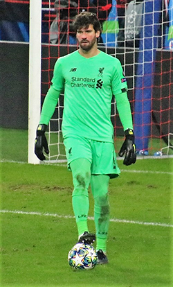
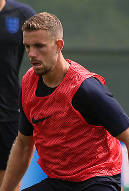
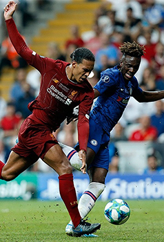
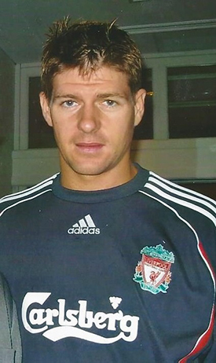
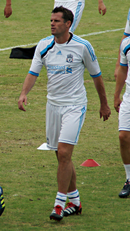

 Alisson tekende in juli 2018 een contract tot medio 2024 bij Liverpool. Dat betaalde circa €62.500.000,- voor hem, exclusief bonussen. Dit maakte hem de duurste doelman aller tijden, tot Chelsea drie weken later €80.000.000,- betaalde voor Kepa Arrizabalaga. Alisson debuteerde bij Liverpool tegen West Ham United en hield in deze wedstrijd de nul. Liverpool werd slechts één keer verslagen in de Premier League en pakte 97 punten, maar moest toch de titel aan Manchester City laten. De 21 clean sheets die Alisson had gehouden in het seizoen 2018/19 in de Premier League was het meeste aantal clean sheets in een Premier League-seizoen van een Liverpool-keeper en Alisson won de Golden Glove, de prijs voor de Premier League-keeper met de meeste clean sheets. Alisson won in zijn debuutseizoen de zesde Champions League in de geschiedenis van Liverpool. Alisson was met een late redding tegen Napoli belangrijk bij het kwalificeren voor de knock-outfase en hield de nul in de finale tegen Tottenham Hotspur. Alisson werd uitgeroepen tot beste keeper van het Champions League-seizoen door de UEFA
 Jordan Brian Henderson (Sunderland, 17 juni 1990) is een Engels voetballer die doorgaans als middenvelder speelt.In juni 2011 maakte Henderson de overstap naar Liverpool, dat ongeveer achttien miljoen euro voor hem betaalde. Hier tekende hij een vijfjarig contract. Henderson maakte op 13 augustus zijn debuut voor Liverpool in de openingswedstrijd van het seizoen, tegen Sunderland. Twee weken later was hij voor het eerst trefzeker voor The Reds in een wedstrijd tegen Bolton Wanderers. Na het vertrek van Steven Gerrard bij Liverpool werd Henderson verkozen tot de nieuwe aanvoerder van de ploeg. In juni 2019 won hij als aanvoerder de UEFA Champions League door met zijn ploeg in de finale Tottenham Hotspur met 0-2 te verslaan. Henderson speelde de hele wedstrijd.
 Van Dijk tekende op 27 december 2017 een contract bij Liverpool. Dat betaalde circa 84,5 miljoen euro voor hem, waarmee hij zowel de duurste verdediger als de duurste Nederlandse voetballer ooit werd. Hij verdubbelde hiermee ruim het voorgaande record dat op naam stond van Marc Overmars, die voor ongeveer 40 miljoen euro van Arsenal naar FC Barcelona verhuisde. Hij tekende een contract voor 5,5 jaar tot de zomer van 2023, waarmee hij omgerekend ongeveer 55 miljoen euro kon verdienen. Hij kreeg bij Liverpool zijn favoriete rugnummer 4 toegewezen. Daarmee speelde hij ook bij FC Groningen en Celtic. Trainer Jürgen Klopp gaf aan dat hij Van Dijk rustig wilde brengen en hield hem buiten de wedstrijdselectie voor een thuiswedstrijd tegen Burnley FC op nieuwjaarsdag. Hij maakte op 5 januari 2018 alsnog zijn debuut voor Liverpool. Hij kreeg die dag een basisplaats toegewezen in een wedstrijd in het toernooi om de FA Cup, thuis op Anfield tegen stadsrivaal Everton. Van Dijk kreeg, samen met Joel Matip, de voorkeur boven het vaste centrale verdedigingsduo Ragnar Klavan en Dejan Lovren, die met kleine blessures kampten en rust kregen. Van Dijk wist in de 84e minuut de winnende goal (2–1) in te koppen. Hij maakte zijn Premier League-debuut voor Liverpool op maandag 22 januari in de uitwedstrijd tegen hekkensluiter Swansea City. Op 14 februari 2018 speelde hij zijn Champions League-debuut voor Liverpool. In die wedstrijd werd met 5-0 gewonnen van FC Porto. Liverpool haalde de finale van de Champions League. Daarin werd met 3-1 verloren van Real Madrid. In de Premier League eindigde 'The Reds' vierde. Seizoen 2018/19. Op 24 oktober stond van Dijk voor het eerst als aanvoerder op het veld van die club, later die week werd bekend dat hij derde aanvoerder werd achter Jordan Henderson en James Milner. In december 2018 was hij op positie 24 de hoogste nieuwe binnenkomer in de lijst van 100 beste voetballers in de wereld, opgesteld door The Guardian. Op 28 april 2019 werd Van Dijk gekozen als Speler van het Jaar in de Premier League. Hij werd de vierde Nederlander en de vijfde verdediger die deze prijs in ontvangst mocht nemen. Van Dijk won op 1 juni 2019 met zijn ploeg de Champions League door in de finale met 0-2 te winnen van Tottenham Hotspur. Na de wedstrijd werd hij uitgeroepen tot Man of the Match. Seizoen 2019/20. In augustus werd Van Dijk door de UEFA gekozen tot Europees voetballer van het jaar. In september eindigde hij na Lionel Messi als tweede in de FIFA-verkiezing voor Wereldvoetballer van het Jaar. In december eindigde hij ook bij de verkiezing voor de Ballon d'Or als tweede, met een klein verschil in punten net achter Messi. In december plaatst The Guardian Van Dijk eveneens op positie 2 in de lijst van 100 beste mannelijke voetballers in de wereld.
 Steven George Gerrard (Whiston, 30 mei 1980) is een Engels voormalig profvoetballer en huidig voetbaltrainer die bij voorkeur als middenvelder speelde. Hij stroomde in 1998 door vanuit de jeugd van Liverpool FC, waarvoor hij vervolgens zeventien seizoenen in het eerste team speelde. Gerrard was van 2000 tot en met juli 2014 tevens international van het Engels voetbalelftal, waarvoor hij 114 wedstrijden speelde waarin hij 21 keer scoorde. Op 4 mei 2018 tekende Gerrard een vierjarig contract als hoofdtrainer van Rangers FC. Hij volgde hiermee Graeme Murty op, die kort daarvoor werd ontslagen. Gerrard doorliep vanaf zijn achtste als rechtsback de jeugdopleiding van Liverpool met spelers zoals Michael Owen en Jamie Carragher. Hij maakte in het seizoen 1998/1999 vervolgens zijn debuut in de hoofdmacht, tegen Blackburn Rovers. In het jaar 2000/2001 was er een probleem op het middenveld waardoor Gerrard daar een paar wedstrijden werd neergezet. Dat pakte zo goed uit dat hij de rest van zijn carrière middenvelder bleef. Gerrard groeide bij Liverpool uit tot een publiekslieveling evenalszijn collega en vriend Michael Owen, die in 2004 vertrok naar Real Madrid. Gerrard bleef bij Liverpool en won in het daaropvolgende seizoen als aanvoerder de Champions League, na een met strafschoppen gewonnen finale tegen AC Milan.
 Als twaalfjarige jongen sloot Carragher zich aan bij de jeugdelftallen van Liverpool, hoewel Carragher tijdens zijn jeugd lokale aartsrivaal Everton steunde. In 1996 won Carragher met Liverpool de FA Youth Cup. In oktober 1996 tekende Carragher zijn eerste profcontract bij Liverpool. Hij maakte zijn debuut een aantal maanden later, in een League Cup wedstrijd tegen Middlesbrough onder trainer Roy Evans. In zijn eerste match op Anfield scoorde Carragher met het hoofd een doelpunt tegen Aston Villa. Carragher brak door in de tijd dat ook Michael Owen doorbrak en maakte ook de eerste voetbalstappen van latere Liverpool-aanvoerder Steven Gerrard mee. In het begin van zijn carrière werd Carragher op verschillende posities ingezet, wat ertoe leidde dat Carragher niet zeker was van een basisplaats. In het seizoen 2000/01-seizoen was Carragher als vaste linksback medeverantwoordelijk voor het behalen van de FA Cup, League Cup en UEFA Cup. Het daaropvolgende seizoen wist Liverpool ook de UEFA Super Cup en de FA Charity Shield te veroveren. Onder trainer Rafael Benítez werd Carragher verplaatst naar het centrum van de verdediging, waar hij een duo vormde met Sami Hyypiä. Op deze positie wist Carragher zich te ontwikkelen waardoor de rest van zijn carrière als centrale verdediger zou doorbrengen. In het seizoen 2004/05 won Carragher met Liverpool de UEFA Champions League door AC Milan na strafschoppen te verslaan in Istanboel, na een legendarische comeback waarbij Liverpool drie doelpunten goedmaakte. Carragher speelde een cruciale rol in de gewonnen finale door een aantal doelkansen te voorkomen in de extra tijd. Carragher werd na dit seizoen gekroond tot speler van het seizoen bij Liverpool. Carragher won in de loop der jaren met Liverpool nogmaals een FA Cup en Charity Shield in 2006 en een League Cup in 2012 waarna hij op 7 februari 2013 aankondigde zijn actieve voetbalcarrière te beëindigen aan het einde van het seizoen. Carragher speelde zijn laatste wedstrijd op 19 mei 2013 tegen het reeds gedegradeerde QPR, een wedstrijd die gewonnen werd met 1-0 dankzij een doelpunt van Philippe Coutinho. Carragher speelde in totaal 737 wedstrijden voor Liverpool waarin hij 4 keer tot scoren kwam.